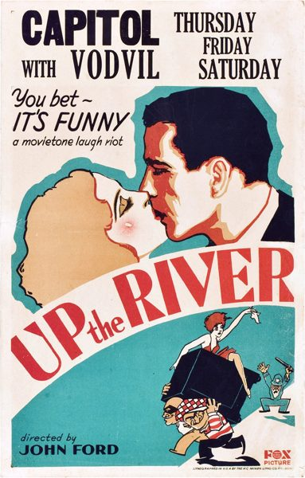

Up the River
Starring: Spencer Tracy, Claire Luce, Warren Hymer
Director: John Ford
Writer: Maurine Dallas Watkins, John Ford
Producer: William Fox
Up the River is a 1930 American pre-Code comedy film directed by John Ford and starring Claire Luce as well as Spencer Tracy and Humphrey Bogart in their feature-film debuts and the only film in which the men appeared together. Fox remade the film in 1938 starring Preston Foster and Tony Martin.
Watch Online: Internet Archive
Trivia
- Up the River was produced in 1930 by Fox Film during John Ford's early sound period; it was reportedly conceived as a grim prison drama until MGM's The Big House prompted a reworking into a comedy, and Ford later credited William Collier Sr. with helping him rewrite the script.
- The scenario was written by Maurine Dallas Watkins, the cinematography was by Joseph H. August, and the editing was by Frank E. Hull.
- Ford foregrounds male camaraderie, structuring the plot around two veteran convicts who break out to help a friend and then return in time for a prison baseball game against a rival team.
Previous Showings
2 Runs • 1 Festival
Original Billings: 1 run (January 19, 1939)
All runs on record (2):
- January 19, 1939 (Thursday - Saturday)Preston Foster, Tony Martin
- November 25 - 26, 2015Fox Studios through 1935, including Silent Sundaysw/ Just Imagine